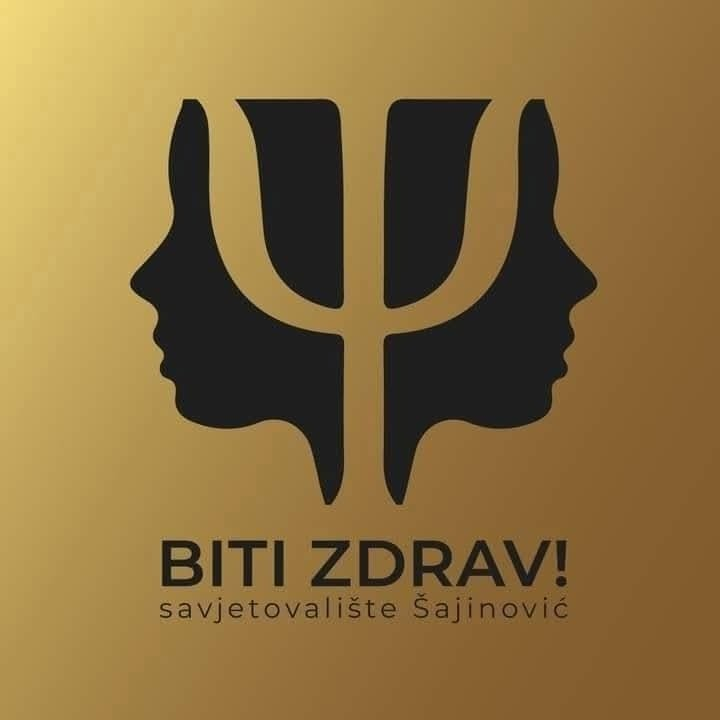

Odrasli
Kada stres, odnosi ili životne promjene postanu teški za nositi sami.
Prostor za vas
biti zdravPSIHOTERAPIJA I SAVJETOVALIŠTEBITI ZDRAV · DOBOJ I ONLINE
Ne morate imati sve odgovore da biste napravili prvi korak. Ponekad je dovoljno da poželite da vas neko sasluša.
Upoznajte prvi korakNebojša Šajinović · Psiholog i psihoterapeut
Za odrasle, parove, djecu i adolescente.
Mjesto za ono što osjećate.
Bez žurbe. Bez osuđivanja.

KOME JE PODRŠKA NAMIJENJENA
Svako životno razdoblje nosi svoja pitanja. Ovdje postoji prostor da se čuje i vaša priča.
Kada stres, odnosi ili životne promjene postanu teški za nositi sami.
Prostor za vasProstor za razgovor o bliskosti, razlikama i onome što je teško izgovoriti.
Prostor za vaš odnosPažnja posvećena dječijem svijetu, osjećanjima i izazovima odrastanja.
Prostor za odrastanjeMjesto za pitanja identiteta, pripadanja, odnosa i vlastitog puta.
Prostor da budete svojiObuke za zaposlene
Dogovor o obuciS KIM RAZGOVARATE
Diplomirani psiholog i sertifikovani sistemski porodični psihoterapeut
Nebojša Šajinović (45) vlasnik je psihološkog savjetovališta „BITI ZDRAV” u Doboju, u Bosni i Hercegovini. Već 15 godina radi u oblasti mentalnog zdravlja, a posljednjih pet godina posvećen je isključivo psihoterapijskom radu s klijentima.
Iako je njegova uža oblast sistemska porodična terapija, većina klijenata obraća mu se za individualni rad. S klijentima razgovara uživo u Doboju i online.
Diplomirao je psihologiju na Filozofskom fakultetu u Banjoj Luci. Edukaciju za sistemskog porodičnog psihoterapeuta završio je pri Asocijaciji sistemskih terapeuta Srbije u Beogradu. Završio je i studij novinarstva na Fakultetu političkih nauka u Banjoj Luci.
Profesionalni put započeo je kao psiholog u Dnevnom centru za djecu ulice (u riziku), u okviru projekta organizacije Save the Children pri Udruženju građana za promociju i obrazovanje Roma „Otaharin” u Bijeljini. Potom je radio u Dnevnom centru za stara lica pri Centru za socijalni rad Trebinje, a zatim u oblasti ljudskih resursa u firmi „Đurić MBB” u Doboju.
Radi s pojedincima, parovima i porodicama, uključujući adolescente i starije osobe. Među temama s kojima mu se klijenti obraćaju su partnerski i bračni odnosi, depresivnost, trauma, anksioznost, panični napadi i zavisnost. Bavi se i profesionalnim sagorijevanjem, izborom zanimanja te ličnim rastom i razvojem.
Za Nebojšu je odluka da se potraži stručna podrška važan dio puta. Psihoterapiju vidi kao zajednički rad kojem doprinose i klijent i terapeut. Na osnovu povratnih informacija svojih klijenata, online razgovore smatra jednako vrijednim oblikom rada.
Volontirao je u više psiholoških savjetovališta, učestvovao u radu timova za podršku ranjivim grupama te pohađao obuke, treninge i konferencije. Radio je i kao voditelj TV dnevnika u informativnim redakcijama RTRS-a i RTV BN-a. Dio njegovog životnog puta čine muzika, politika i kritičko promišljanje društva u kojem živi.
Pravoslavni je vjernik. Vjeru i porodicu smatra temeljem života. Sa suprugom Željanom (Lošić) Šajinović, TV voditeljkom i novinarkom koja se bavi i glasovnom naracijom i odnosima s javnošću, ima dvojicu sinova, Vojislava Vuka i Petra. Sa porodicom živi i radi u Doboju.
NAŠ PRISTUP
Važno nam je da razgovor počne od vas — od onoga što trenutno proživljavate i onoga što biste željeli bolje razumjeti.
Prostor da kažete šta vas dovodi, postavite pitanja i osjetite kako vam razgovor odgovara.
Razgovaramo o očekivanjima, granicama i načinu rada koji odgovara vašim potrebama.
Ne morate sve ispričati odmah. I za teške riječi može biti potrebno vrijeme.
PRVI RAZGOVOR
Prvi susret je prilika za upoznavanje. Možete doći s pitanjem, nedoumicom ili jednostavno osjećajem da vam je potreban razgovor.
Za početni upit dovoljno je navesti da vas zanima razgovor. Nije potrebno dijeliti lične ili zdravstvene detalje.
Susreti su mogući u Doboju ili online. Prije početka dogovaramo način razgovora, a možete pitati o trajanju, cijeni i pravilima povjerljivosti.
Prvi razgovor ostavlja prostor da razmotrite da li vam pristup odgovara i šta želite dalje.
DOBRO JE ZNATI
Ne morate unaprijed znati
sva prava pitanja.
Ne. Obrazac priprema prijedlog koji sami šaljete savjetovalištu. Termin je dogovoren tek kada dobijete potvrdu. Za online susret tada dobijate i podatke za povezivanje.
Ne. Razgovor može početi od onoga što vam je trenutno važno, čak i ako to još ne možete lako imenovati. Nema potrebe za unaprijed pripremljenom pričom.
Prije početka potrebno je dogovoriti ulogu roditelja ili staratelja, saglasnosti i granice povjerljivosti. Konkretan način rada zavisi od uzrasta, potreba i procjene stručnjaka.
Pravila povjerljivosti i njene granice treba razjasniti sa stručnjakom prije početka rada, uključujući okolnosti u kojima postoji obaveza zaštite sigurnosti. Pitajte o detaljima pri dogovoru prvog susreta.
Trajanje, cijena i uslovi otkazivanja još nisu uneseni u ovu radnu verziju. Za aktuelnu cijenu, trajanje i dogovor termina javite se telefonom.
Da, uz susrete uživo u Doboju nudimo i online terapiju. Termin i način povezivanja dogovaramo unaprijed. Za razgovor pripremite miran, privatan prostor i stabilnu internet vezu. Za prvi dogovor možete predložiti termin putem obrasca ispod ili se javiti telefonom.
DOGOVOR TERMINA
Izaberite datum i vrijeme koji bi vam odgovarali, pa pripremite kratku poruku za savjetovalište.
Ovo je prijedlog termina. Dostupnost, trajanje i konačan termin potvrđujemo u direktnom dogovoru. Za online susret tada dogovaramo i način povezivanja.
Radije biste pozvali? +387 65 419 801KADA BUDETE SPREMNI
Prvi korak ne mora biti velik.
Može biti samo jedno pitanje.
Ova stranica nije kanal za hitnu pomoć.